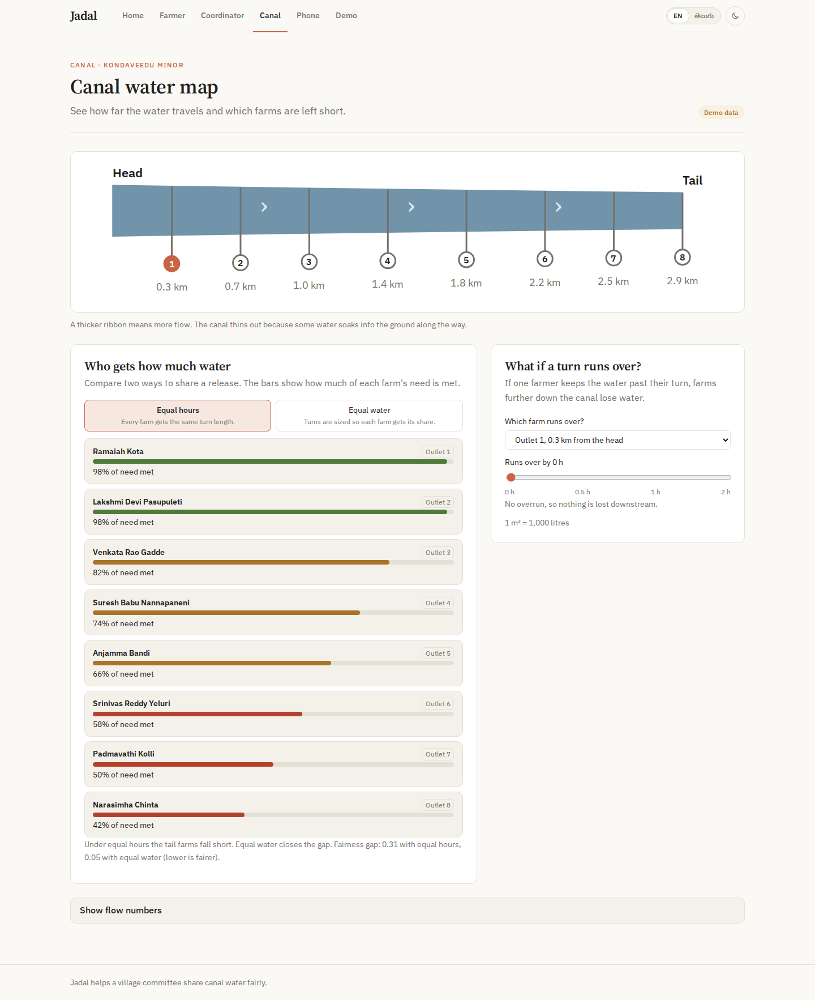
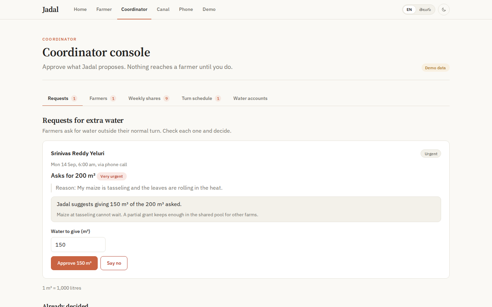
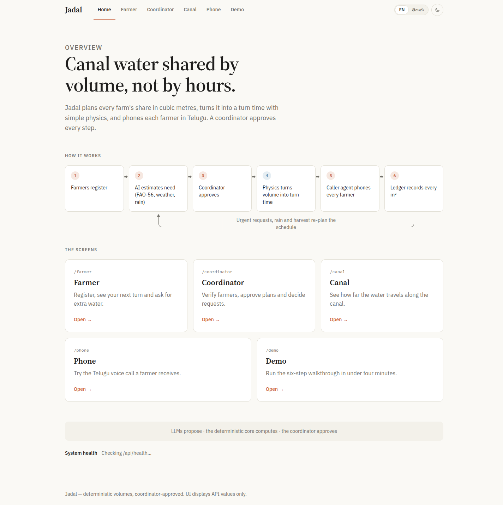
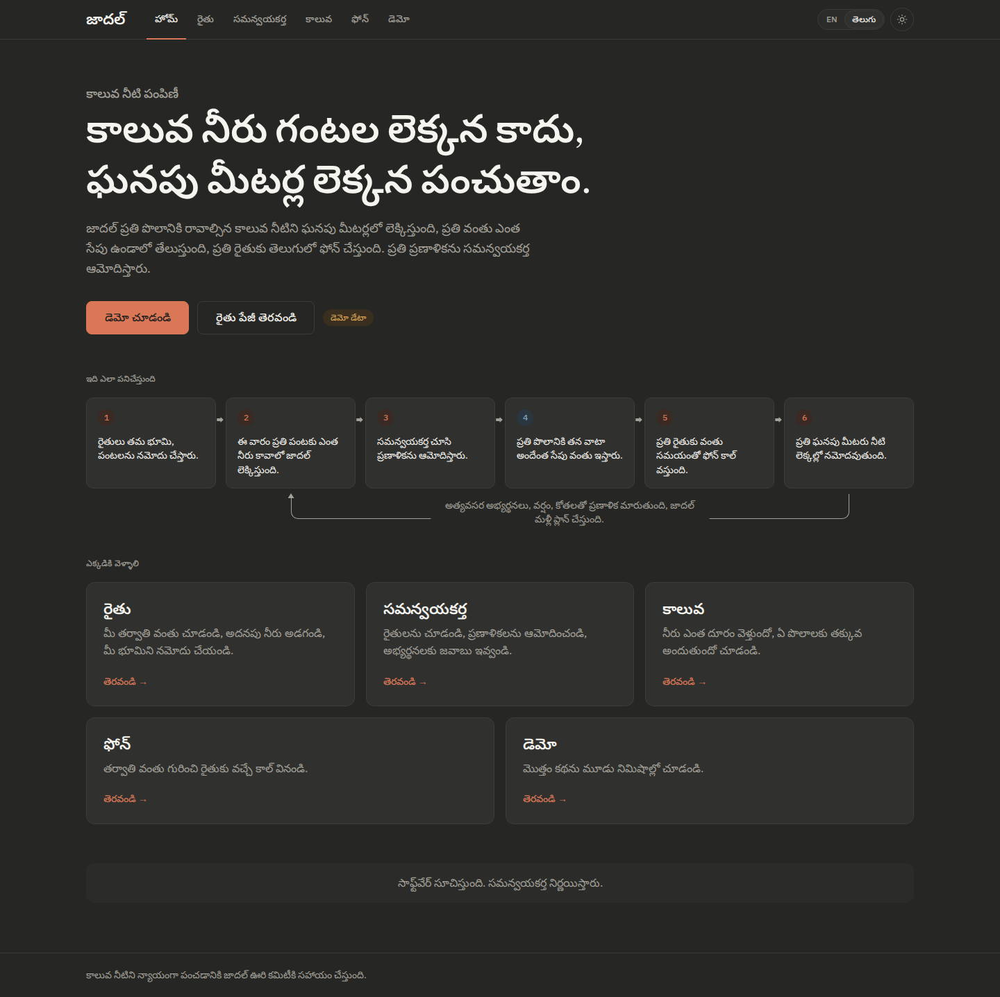

Frontend
What farmers and coordinators see, in Telugu and English.
Farmer portal
Coordinator console
Canal view
Simulated phone
Canal water shared by volume, not by hours.
IEEE-CIS Hackathon · LLMs + Agentic AI · Kondaveedu Minor (3 km, 8 Outlets)
Each farmer gets fixed hours on a weekly roster. But an hour at the canal head delivers far more water than an hour at the tail.
Seed scenario: Kondaveedu Minor (3 km, 8 outlets, Q₀ = 0.15 m³/s, k = 0.00012/m). Outlets o1→o8.
Equal hours. Unequal water.
Jadal converts volume into turn duration using local flow: Tᵢ = Vᵢ / Q(xᵢ). Tail turns run longer to deliver the true volume required.
Crop water need met for tail-end outlets (o7/o8). Outlets get equal 1-hour turns despite 29.4% seepage loss.
packages/contracts/fixtures/demo-scenario.jsonCrop water need met for tail-end outlets. Turns lengthened deterministically based on local flow velocity.
@jadal/core (rosterEngine.ts)Gini coefficient across farmers falls from severe inequality (0.31) to near-perfect parity (0.05).
apps/api/src/e2e.test.ts
LLMs propose The core computes The coordinator approves


When moisture stress threatens a sensitive crop stage, farmers call in Telugu. No typing, no smartphone required.
«నాకు ఈ వారం అత్యవసరంగా నీరు కావాలి.»
"I urgently need water this week — flowering stage needs moisture."

Night release protocol: When release window 2 starts after dark (19:00 IST), a warning call is dispatched 1 hour before water arrives (18:00 IST). Non-smartphone farmers (f5, f8) receive automated voice calls.
The old system recorded hours in private notebooks. Jadal records every cubic metre in a verified double-entry volume ledger.
FAO-56 crop evapotranspiration, canal hydraulics, and ledger arithmetic are pure TypeScript functions. No LLM computes volumes.
Agents propose; the coordinator decides. Extra water is borrowed from future seasonal quota, eliminating free upstream overruns.
When farmer f3 finishes cotton harvest early, unused quota transfers to a transparent common buffer for downstream farmers to request.
FAO-56 crop engine, open-channel hydraulics, roster optimizer, and double-entry ledger. 85 unit tests.
Hono on Cloudflare, D1 event store, System 1/2 agents, Sarvam Telugu telephony. 253 unit tests.
Portals, interactive canal map, simulated phone, 6-step guided demo, brag config. 58 unit tests, 17 e2e tests.
396 unit tests + 17 Playwright e2e tests pass. Continuous review loop enforces contract immutability and zero water arithmetic outside core.
Tail-end farmers get usable water, disputes are settled by double-entry ledger evidence, and every farmer is reached — even without a smartphone.
Jadal · IEEE-CIS Hackathon · LLMs propose · Core computes · Coordinator approves